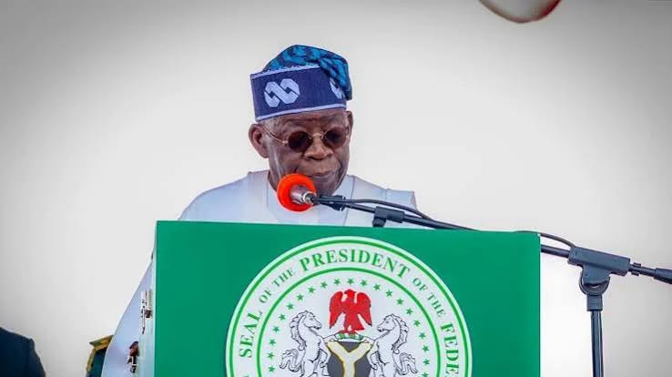

Nigeria - National & States · 20 Sep 2026
Nigeria Prepares for 66th Independence as Tinubu Plans Broadcast and Assigns UNGA Delegation to Shettima

President Bola Tinubu is scheduled to address Nigerians on October 1 as part of a low-key programme for the nation's 66th Independence anniversary, alongside directing Vice President Kashim Shettima to lead the Nigerian delegation to the 81st United Nations General Assembly.
As Nigeria approaches its 66th Independence Anniversary, the Federal Government is making preparations for a low-key commemoration. As part of the official schedule for the milestone, President Bola Tinubu is set to broadcast a national address to citizens on October 1, according to reports from The Reporter.
In a parallel development concerning the nation's diplomatic engagements, President Tinubu has officially mandated Vice President Kashim Shettima to represent him and lead Nigeria's delegation to the 81st United Nations General Assembly (UNGA) in New York, as detailed by Punch.
The dual announcements outline a busy period for the country's executive leadership, balancing domestic observances of national sovereignty with critical international representation on the global stage. Further details regarding the broadcast modalities and the full roster of the UNGA delegation are expected to be released by government officials closer to the events.
Sources
- https://news.google.com/rss/articles/CBMisAFBVV95cUxNaFZaXzVMMmJDMjlscDZKODNJOHdEVVE3R1BQTlJyaTRHNGxrRy00RkxmdG5UVF9heUN2S3M1d2JUa1NhNGZqM2pmZm1vODhWOUtza0xEdFN1Q2tUekNfY3BpR1J6Q0Nma3RxMUZqUWlqVlhpVkJqb3IyNHZCczMybUdTN0lMcllZcWJrekQxYmxVc3p3YVg1OUFHamJ4NVU2Vjdvb0ZPVC1LY0Y1MERnVg?oc=5
- https://thereporter.com.ng/nigerias-66th-independence-tinubu-to-address-nigerians-october-1
- https://punchng.com/tinubu-mandates-shettima-to-lead-nigerias-delegation-to-unga/?utm_source=rss.punchng.com&utm_medium=web
Sources
This article was produced by the C. O. Eric AI Newsroom from the cited sources. It is published only after automated evidence and safety checks.